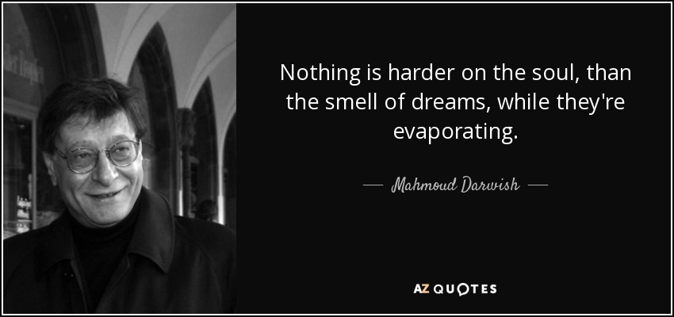
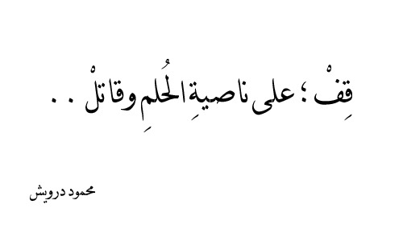

Life and career:
Mahmoud Darwish was born in the village of al-Birwa in the Western Galilee.He was the second child of Salim and Houreyyah Darwish. His family were landowners. His mother was illiterate, but his grandfather taught him to read.After Israeli forces assaulted his village of al-Birwa in June 1948, the family fled to Lebanon, first to Jezzin and then Damour.Their home village was razed and destroyed by the Israeli army to prevent its inhabitants from returning to their homes inside the new Jewish state.A year later, Darwish's family returned to the Acre area, which was now part of Israel, and settled in Deir al-Asad.Darwish attended high school in Kafr Yasif, two kilometers north of Jadeidi. He eventually moved to Haifa.He published his first book of poetry, Asafir bila ajniha, or "Wingless Birds", at the age of 19. He initially published his poems in Al Jadid, the literary periodical of the Israeli Communist Party, eventually becoming its editor. Later, he was assistant editor of Al Fajr, a literary periodical published by the Israeli Workers Party (Mapam).Darwish left Israel in 1970 to study in the Soviet Union (USSR).sHe attended the Lomonosov Moscow State University for one year,before moving to Egypt and Lebanon When he joined the PLO (Palestine Liberation Organization) in 1973, he was banned from reentering Israel.In 1995, he returned to attend the funeral of his colleague, Emile Habibi, receiving a permit to remain in Haifa for four days.That year Darwish was allowed to settle in Ramallah,but he said he felt he was living in exile there, and did not consider the West Bank his "private homeland."
Mahmoud Darwish died on 9 August 2008 at the age of 66, three days after heart surgery at Memorial Hermann Hospital in Houston,Texas.Before surgery, Darwish had signed a document asking not to be resuscitated in the event of brain death
Darwish was a member of Rakah, the Israeli communist party, before joining the Palestine Liberation Organization in Beirut.[39] In 1970 he left for Moscow. Later, he moved to Cairo in 1971 where he worked for al-Ahram daily newspaper. In Beirut, in 1973, he edited the monthly Shu'un Filistiniyya (Palestinian Affairs) and worked as a director in the Palestinian Research Center of the PLO and joined the organisation. In the wake of the Lebanon War, Darwish wrote the political poems Qasidat Bayrut (1982) and Madih al-zill al'ali(1983). Darwish was elected to the PLO Executive Committee in 1987
Sign up for our newsletter!

Some sentences quoted from the poems of Mahmoud Darwish.
 